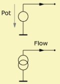
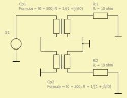
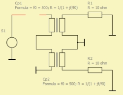
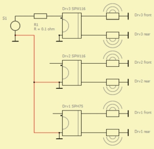

Source
| Home | LE-Part | General |
The Source component is driving a network of lumped elements.
Each network can have only a single Source component. However, it is possible to specify multiple
independent networks, each one with an individual Source.
A Source is a component, where one terminal is always grounded.
Parameters
 |
| Caption | String | Name of component |
| Formula | String | Formula of parameters |
| Domain Type | [Electric, Mechanic, Acoustic] | |
| Source Type | [Potential, Flow] | |
| Network Type | [Impedance, Mobility] (only Domain=Mechanic) | |
| Weight (f) | [Unchanged, Mul by jω, Div by jω] | |
| Weight | Amplification of signal | |
| Delay | s | Delay of signal |
| Ref to Data | Reference to frequency spectrum | |
Domain Type
Domain Type selects the type of domain which the source is directly connected to. For example, if you model an electro-acoustic transducer then Domain Type = Electric because the first element which the source is connected to is likely an electric component. Conversely, if you simulate a mechanic device, for example, then Domain Type = Mechanic.
Source Type
Source Type selects whether the Source behaves as an ideal potential source or as a flow Source. An ideal potential source has zero series impedance. An ideal flow source features zero parallel admittance. As explained in chapter LEM-Analysis depends the physical meaning on the selection of Domain Type and Network Type.
Network Type
Network Type is available only for Domain Type = Mechanic. Otherwise it is fixed
to Impedance. In the Impedance type of network the physical resistance
forms an impedance. For example in the electric domain we have Ze(R) = Re = V/I.
Similarly the impedance of an acoustic resistance is Za(R) = Ra = p/q.
In the mechanic domain it is practical to have available two network types:
With Network Type = Impedance the mechanic impedance is defined to be Zm(R) = Rm = F/v.
With Network Type = Mobility the mobility admittance is defined to be Ymob(R) = Rm = F/v.
The mechanical impedance network is usually of advantage for analytical analysis.
The mechanic mobility network has its advantage at its ease of modeling. One always can
transform the type of network using a dual transformation technique [10].
See also at LEM-Analysis.
Weighing
The value of driving is by default of amplitude 1 unit peak value.
You can alter this value with the help of parameter Weight.
Note, that the over-all level of driving is typically set at menu
Global/Level of Driving.
The signal can also be delayed by τ seconds:
v2 = v1·exp(-j·ω·τ)
Weight(f) provides a frequency dependent weighing of the signal:
Unchanged : This means the spectrum is not altered.
Multiply by jω : in this case the spectrum is raising with frequency:
v2 = v1·jω
Divide by jω : in this case the spectrum is falling with frequency:
v2 = v1/jω. This case is often used to mimic the
response of a direct radiating loudspeaker which is roughly proportional to the acceleration.
Additionally the driving value can be weighted by a frequency response from a dataset. This dataset comes from a Curve File Object of the General-Part. The reference points to the first curve. This curve is named in edit-field labeled Transfer-Function and has a red background.
Multiple Networks
A network is established with the help of a new Source component. Between independent Networks there should be no flow, i.e. each system is decoupled from any other system.
Note, Radiator-components will automatically install hidden mutual radiation impedance components within a network. There will be no mutual radiation coupling between Radiators across different Networks.
Passive Networks
  |
 |
Disabling Networks
Only components which are directly or indirectly connected to the source are taken into account. Un-connected components will be ignored during calculation. For example the upper network to the right will be calculated whereas the second version will be switched off.
Connecting Radiation Networks
Radiation components such as
Radiator, for example, install acoustic radiation admittances.
Further, AKABAK tries to install mutual radiation elements. These are hidden
and stand for the transfer of acoustic power between Radiators.
Mutual radiation elements are installed only within a network and also only
of a single BEM-subdomain. This is so because there is by definition no coupling
between individual LE-networks. Likewise boundaries and sources of different BEM-subdomains
do not interact.
The LE-network of example /BEM/ABEC21 Sealed.akp is shown to the
right. In this example there are three speakers in a sealed enclosure. Their front sides
radiate into an exterior Domain. The rear into an enclosure. There is no acoustic
connection between the inner of the cabinet and the outside. Hence, there are 18
mutual radiation elements. These will be installed automatically.
However, the example /BEM/ABEC21 Sealed.akp is intended not to work as a normal
speaker system. In this experiment, one speaker is driven by the Source, whereas the other
two speakers are operating as microphones. These passive speakers are driven merely
acoustically by means of acoustic mutual radiation elements.
Because the mutual radiation elements are installed automatically we should provide
information to which network the passive network shall belong. Further, we
have to make sure it is not getting ignored during calculation.
Connecting a passive network can be achieved by wiring its Ground to the ground-point of the Source-Symbol as demonstrated by the red wire in schematic to the right. In this example there are two passive networks.
Formula
The name of the parameters are equal to the formula-identifiers:
|
.jpg) |
Examples
To the right we have a voltage source of the electrial domain. Althought the Filter component serves as a voltage controlled voltage-source there is nevertheless coupling between the tweeter- and woofer-branches. The coupling stems from mutual radiation impedances which are installed automatically by the application.